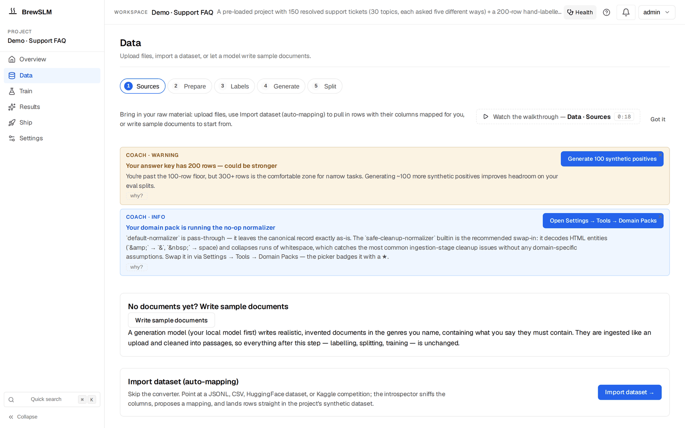

Ingest & map your data with per-row accountability
After this lesson you can ingest a dataset from a locator, accept or override the introspector's proposed mapping, read the per-row rejection breakdown in a dry-run, and commit the import.
In Track 2 you wrote your dataset as a Python list of dicts. That's perfect for learning and hopeless at scale: no provenance, no rejection accounting, no reuse. BrewSLM's stages 01–04 turn "get data in" into an auditable, per-row-accountable import.
01 Ingest — source locators
In the workspace all four stages run from Data → Sources (/project/<id>/data?step=data): upload files there, or open the Import dataset (auto-mapping) card and press Import dataset → for the wizard this lesson describes. You don't write a loader; you name a source. A locator says where the rows live:

hf:imdb:train # a Hugging Face dataset + split
jsonl:/path/to/data.jsonl
kaggle:competition:slugSource connectors implement load() + describe(), and — importantly — unparseable rows surface as sentinel rows, not silent drops. You always know what didn't parse.
02 Introspect — guess the shape, never silently
The introspector samples ~20 rows and proposes how to map them to a task: a ranked list of ShapeHypothesis objects and a top ProposedMapping with a confidence and a rationale. This is the platform doing what you did in your head when you decided "prompt goes here, label goes there." Its contract: it never auto-picks silently — below 0.80 confidence it requires an explicit --force.
03 Map (dry-run) — preview before you commit
Before writing anything, a dry-run shows a sample of accepted rows and a full rejection breakdown grouped by reason. Every input row becomes either a TransformedRow or a RejectedRow with a stable reason code — the per-row accountability your list of dicts never had.
In the wizard that is step 4, Preview & Confirm. From the command line it is the preview subcommand (run from backend/; --project is optional for a preview). The numbers below are illustrative; the reason codes are the real ones the classification mapper emits:
$ cd backend && python -m app.cli.dataset_import preview \
--locator hf:imdb:train --auto --limit 5000
--auto picked mapper 'label_to_classification': detected text column 'text' + categorical column 'label' with 2 distinct values (0, 1)
source=hf mapper=label_to_classification target_task_profile=classification
accepted=5 rejected=188 dry_run=True
rejection breakdown:
missing_text 121
label_not_allowed 54
parse_error 13
first 5 accepted rows:
[1] {"text": "I rented I AM CURIOUS-YELLOW from my video store …", "label": "0"}
...Read accepted= with care: in a preview it is the number of sample rows kept, capped at --sample-cap (default 5), not the number of rows that would be accepted. The rejected count and its breakdown do cover every row read (here up to --limit), so the would-be accepted count is the rows read minus the rejections.
The run subcommand takes the same flags but has no dry-run mode: it writes the accepted rows (and needs --project). Preview first, then run.
A pattern you'll see everywhere
Rejections are never all-or-nothing and never silent: you see every rejection grouped by reason, with sample rows for each. Rejected import rows are never written, so there is nothing to rescue after the fact — if a reason points at something fixable (a wrong column in the mapping, a label missing from the allowed set), fix the source or the mapping and re-run. This is the platform version of the data hygiene you learned in Track 1.
04 Map (commit) — write it down, emit the event
After you confirm, the mapped rows are appended to the project's dataset, and the stage emits its RunEvent — the first durable trace in your audit spine:
RunEvent: ingestion / dataset_import_run (severity: info)
payload: { source_id, locator, mapper_id, target_task_profile,
accepted_count: 4812, rejected_count: 188,
rejection_counts, written_path, config_id }
on error → dataset_import_failed (severity: error)One nuance worth knowing: bulk-dropping in the UI affects only the sample rendered to you; the true accepted/rejected counts are preserved in the audit row, so the numbers never lie. Imported rows land in the project's synthetic dataset already accepted. Unlike generated rows they skip the review queue (Data → Labels → Details → Review queue lists only rows waiting for review) and go into your next split as training data, so the dry-run is your review. With data ingested and mapped, the next lesson covers the platform's answer to "in practice, hundreds more rows" — generating synthetic data and reviewing it.
Key idea
Importing data isn't one step — it's ingest → introspect → dry-run → commit, and every row is accounted for. You trade a hand-written list for provenance, a confidence-scored mapping, and a rejection breakdown you can act on.
Key terms
- source locator
- A string naming where rows live (hf:id:split, jsonl:/path, kaggle:...).
- Introspect
- Sampling rows to propose a task mapping; never auto-picks below 0.80 confidence.
- ProposedMapping
- The top mapping proposal with a confidence and rationale.
- Map (dry-run)
- A preview of accepted rows plus a full rejection breakdown, before writing (the wizard's Preview & Confirm step, or the CLI's
previewsubcommand). For imports it is the only review. - RejectedRow
- An input row that failed mapping, tagged with a stable reason code.
- dataset_import RunEvent
- The audit event (
dataset_import_run, stage ingestion) emitted on commit, carryingaccepted_count,rejected_count,rejection_countsand the written path.
Check yourself
Answers are saved to this browser.